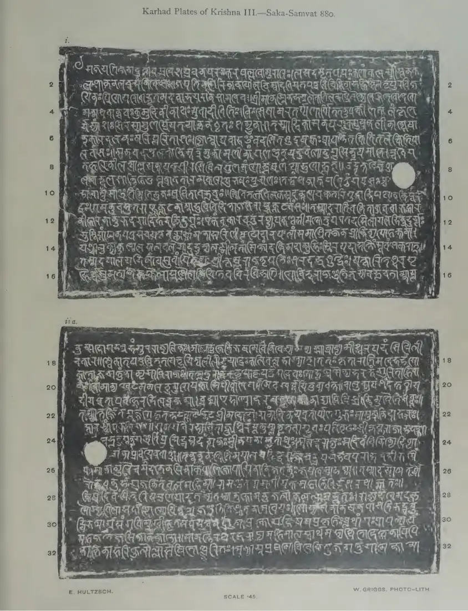
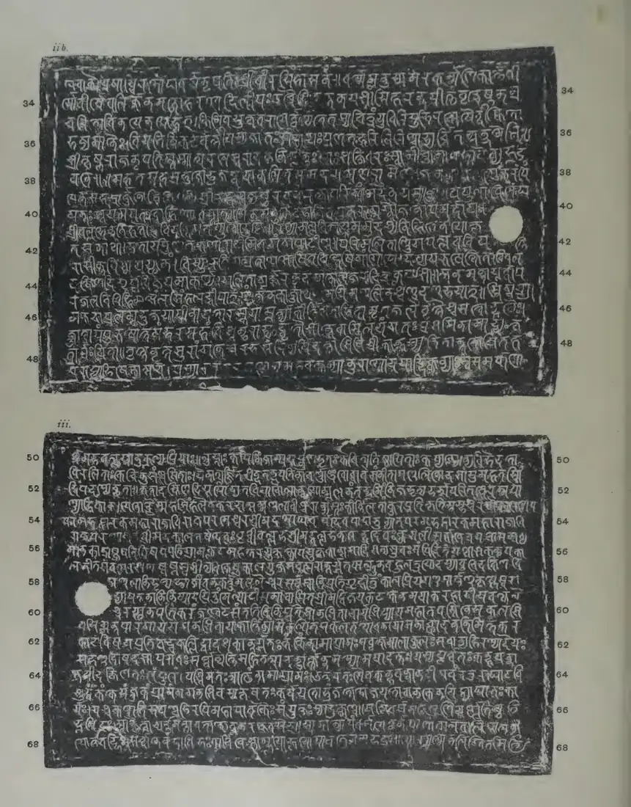

Karhād plates of Krishṇa III. ; Śaka-Saṅvat 880
KARHAD PLATES OF KRISHNA III.;
SAKA-SAMVAT 880.
BY R. G. BHANDARKAR, M.A., PH.D., C.I.E.
These copper plates were found at Karhâd in the Satara district while the foundations of an old and dilapidated house were being dug out, and were put into my hands by Mr. Hari Narayan Apte, the present manager of the Ânandâśrama in Poona. They are three in number, and each is 13½ inches long and 9 inches broad. The first and the third plates are engraved on one side, and the second on both. The letters are well-formed and legible throughout, except in one place where an original mistake has been corrected by something else being engraved in its place (line 21).
The inscription on the plates records the grant of the village of Kankêm (ll. 62 and 65), situated in the district of Karahâṭa and belonging to the Kalli group of twelve (l. 61 f.), by Krishnarâja (v. 24), who was also called Akâlavarsha and Vallabha (l. 55), and who was Krishna III. of the Râshtrakûṭa family. The grantee was Gaganaśiva (ll. 61 and 65), who was versed in all the Śivasiddhântas. He was the pupil of Îsânaśiva of Karahâṭa (l. 59 f.),—the modern Karhâd;— and the grant was made for the maintenance of the ascetics that lived at the place (l. 61).
The date of the grant was Wednesday, the thirteenth tithi of the dark fortnight of Phâlguna of the cyclic year Kâlayukta, the Śaka year being 880 past (l. 56 f.). Professor Kielhorn has favoured the Editor with the following remarks on this date:— “ Śaka-Samvat 880 expired by the southern luni-solar system was Kâlayukta, and the equivalent of the date is
1 Read °लिखदिदं.
2 Read दानाच्छेयी.
3 Read °दच्युतं.
4 Read सहस्राणि.
5 Read एकैव.
6 Read °सेतुर्दपाणां.
7 Read °नेतान्.
8 This word is engraved in large Telugu characters.
Wednesday, 9th March A.D. 959, when the 13th tithi of the dark half of the amânta Phâlguna commenced 2 h. 33 m. after mean sunrise. The reason why the tithi has been joined here with the day on which it commenced, very probably is this, that the nakshatra on that day (viz. on the Wednesday) was Śatabhishaj; for, the conjunction of the 13th tithi of the dark half of the pûrṇimânta Chaitra or amânta Phâlguna with the nakshatra Śatabhishaj— a conjunction at which the tithi is called Vâruṇi— is very auspicious,1 so that donations etc., made on such an occasion, are as meritorious as those made at an eclipse etc.”
The account of the different princes of the family is given word for word in the same verses as those occurring in the plates found at Dêôlî near Wardhâ which have been published by me in Vol. XVIII. of the Journal of the Bombay Branch of the Royal Asiatic Society; and consequently the present grant, issued, as it was, eighteen years after the other, confirms the important statements contained in the latter, which have enabled us to clear all the existing difficulties in the genealogy and history of the family. There is, however, some additional information given in this grant. In the introduction, instead of the words Sâtyakî-varga-bhâjah, we have in the Karhâd plates (v. 6) tuṅga-yaśaḥ-prabhâvâḥ. Still the reading of the Dêôlî plates is not a mistake, and the family was regarded as belonging to the Sâtyaki branch of the Yâdava race, as we have a statement to that effect in the Navasârî grants, also edited by me. But the varied reading of the present grant enables me to make out that the Râshṭra-kûṭas sprang from a family that was known by the name of Tuṅga. Hence it is that so many of the princes have their names ending in that word. Kṛishṇa I. was called Śubhatuṅga; Gôvinda III., Jagattuṅga; and Śarva or Amôghavarsha, Nṛipatuṅga. Then in the description of Dantidurga we have one verse more than in the Dêôlî plates, in which his having wrested the supreme sovereignty for his own family from the Châlukyas is mentioned distinctly (v. 9). There is also an additional verse about Nṛipatuṅga or Amôghavarsha, who therein is represented, as in the Navasârî grants, to have “burnt” or destroyed the Châlukya race (v. 14). In the account of Amôghavarsha, the Baddiga of the Khârêpâṭan grant, the father of Kṛishṇa III., we have two additional verses (22 and 23) descriptive of his virtues.
The account in the Dêôlî plates ends with the coronation of Kṛishṇa III.; and all that he is therein represented to have done, he did while he was a Kumâra, or crown-prince, and janak-âjñâ-vaṭa, i.e. acting under his father's orders, or subordinate to him. In the present grant there is one verse more about him in this part, in which he is represented to have conquered Sahasrârjuna, who was an elderly relative of his mother and his wife (v. 25). Sahasrârjuna is the mythical hero to whom the Kalachuri rulers of Chêdi traced their descent, and who, in the story in the Mahâbhârata, is represented to have killed Jamadagni, the father of Paraśurâma, and in revenge to have had his thousand arms cut off by the latter. Very likely, the rulers of Chêdi generally, or some of them at least particularly, were called by the name of Sahasrârjuna after their mythical ancestor, and the name Arjuna does occur in the list of the princes belonging to that family. The Sahasrârjuna, therefore, conquered by our Kṛishṇa, must have been a ruler of Chêdi or must have belonged to that family. And it is also likely that he was a relative of his mother and his wife. For Amôghavarsha, the father of Kṛishṇa, is in the Kardâ plates represented to have married Kandakadêvi, the daughter of Yuvarâja, who must have been the same as the fourth prince in the list given by Professor Kielhorn;2 and it appears that Kṛishṇa himself married a lady from the same family. Who the particular prince conquered by Kṛishṇa III. was, it is difficult to say. The name Arjuna or
1 “A still more auspicious conjunction is that of the same tithi with a Saturday and Śatabhishaj; and an even more auspicious conjunction is that of the same tithi with Saturday, Śatabhishaj, and the Śubhayôga. In the former case the tithi is called Mahâvâruṇi, and in the latter Mahâmahâvâruṇi.”
2 Ep. Ind. Vol. II. p. 304.
Sahasrârjuna does not occur in Professor Kielhorn's list. But many other names of the Kalachuri princes related to the Râshṭrakûṭas also do not occur therein. The following is a list of those princes:—
- 1. Kôkkala, whose daughter was married to Akâlavarsha and was the mother of Jagattuñga.
- 2. Raṇavigraha, his son, whose daughter Lakshmî was married to Jagattuñga and who was his maternal uncle.
- 3. Arjuna, the eldest son of Kôkkala and therefore brother of the above.
- 4. Aṅgaṇadêva, his son, whose daughter Vijâmbâ was married to Indra-Nityavarsha.
- 5. Yuvarâja, whose daughter Kandakadêvî was the wife, or one of the wives, of Amôghavarsha-Baddiga according to the Kardâ plates.
- 6. Sahasrârjuna or Arjuna, the prince mentioned in the present grant as having been conquered by Kṛishṇa III.
Of these, the names Raṇavigraha, Arjuna and Aṅgaṇadêva do not occur in Professor Kielhorn's list. Perhaps they were collaterals and not ruling princes. But that there was a ruling prince of Chêdi of the name of Raṇavigraha, is shown by the following verse occurring in Jahlaṇa's Sûktimuktâvalî, attributed to Râjasêkhara:—
नदीनां मेकलमुता नृपाणां रणविग्रहः । कवीनां च सुरानन्दशेदिमण्डलमण्डनम् ॥
“Of rivers the Mêkalasutâ ( i.e. Narmadâ), of kings Raṇavigraha, and of poets Surânanda, are the ornaments of the country of Chêdi.” Jagattuñga's maternal uncle and father-in-law is called Śamkaragaṇa in the Kardâ plates; but that is probably a mistake. The name Śamkaragaṇa does occur in Professor Kielhorn's list down below; but he was not the son of Kôkkala and consequently could not be the father-in-law of Jagattuñga. Where to place these three princes, therefore, in the Chêdi list, must be left to future researches.
After the account of Kṛishṇa's coronation, there are in the Karhâđ plates two verses more about the reigning monarch, in which we are told that he deposed some of his chiefs from their places and raised others to the dignity, separated some from each other and united others (v. 34); that, with the intention of conquering the south, he exterminated the Chôla race and placed its country under his own dependents, and that, having made the Chêranma, the Pândya and the Simhala his tributaries, he erected a triumphal column at Râmêsvara (v. 35). The statement about the conquest of the Chôlas and the annexation of their territory is confirmed by two inscriptions found at Tirukkalukkunṇam in the Chingleput district of the Madras Presidency and edited and translated by Mr. Venkayya.1 These inscriptions are dated in the seventeenth and nineteenth years of Kanṇaradêva, and he is there spoken of as the conqueror of Kachchi ( or Kâñchîpura ) and Tañjai ( identified with Tañjâpura or Tañjâvûr, i.e. Tanjore ). This last was the capital of the Chôla princes. Another inscription at Vellore is dated in the twenty-sixth year of his reign,2 and there are two more in South Arcot. Kanṇaradêva is evidently Kṛishṇadêva; since Kannara we do find as an ordinary way of pronouncing Kṛishṇa. Kṛishṇa of the Yâdava dynasty is in several inscriptions called Kanhara or Kanhâra. The very fact that so many inscriptions in the country governed by the Chôlas and the Pallavas are dated in Kṛishṇa's reign, shows that the country formed part of the territory ruled over by him. As stated by me in the paper on the Dêôlî plates, Bûtuga or Bûtayya, the same as the Bhûtârya of our grants, whom Kṛishṇa had raised to the throne of the Gaṅga kingdom, is represented in an inscription at Âtakûr3 to have assisted Kannaradêva in destroying Râjâditya, the Chôla prince. But the conquest of the Chôla country was effected after Śaka-Sainvat 862, the date of the Dêôlî grant, since it is not mentioned in it, and before Śaka-Sainvat 880, the date of the Karhâđ grant. As the destruction of Râjâditya is
1 Ab v., Vol. III. pp. 282-85.
2 Above, p. 81.
3 Ep. Ind. Vol. II. p. 173.
alluded to. in the Ātakūr inscription as a recent event, it must have taken place a little before Śakā 872 current, the date of that inscription. And the present grant affords direct evidence for Kṛishnarāja's occupation of the Chôla country. For it was issued while he was encamped with his victorious army at Mēlpāti for establishing his followers in the southern provinces, for taking possession of the estates of the provincial chiefs, and for constructing temples to Kālapriya, Gaṇdamārtaṇda, Kṛishnēśvara and others (ll. 57 to 59). The Mēlpāti where he was encamped for settling the southern provinces, must be Mēlpādi in the Chittūr tāluka of the district of North Arcot.1 Whether there are now any temples at Mēlpādi or in the vicinity corresponding to those, to construct which was another of the objects of the Rāshṭrakūṭa prince, must be left to be determined by those who are intimately acquainted with the country. The conquest of the Pallava country, however, was effected before, since we have a mention of it in the Dēolī plates.
The boundaries of the village granted are specified in line 63 f. There is a village of the name of Kaṅkī some miles to the south-east of Karhâd, which is now included in the Junior Miraj State. That village is, I am told, bounded on the south by another of the name of Pandūr, and on the west by a third called Ādhī. The Kaṅkēm of the grant is therefore the modern Kaṅkī; Pēndurēm, Pandūr; and Ādhēm, Ādhī. The river in the vicinity is, I am told, now called Agraṇī; but the Kṛishnavēṇā, which corresponds to the Prâkṛit form Kanhavannā of the grant, is not far. Perhaps Vannâ, the latter part of the compound, was the old name of the Yerla, which flows through the district, and the river meant is the Kṛishnâ after its confluence with the Yerla. There is also a village of the name of Kallī in the vicinity; and the twelve villages of which it was or is the chief, have now the following names:—
| 1. Kallī. | 5. Ādhī. | 9. Khatāv. |
| 2. Kaṅkī. | 6. Salgar. | 10. Nignūr. |
| 3. Ājūra. | 7. Bēkônkī. | 11. Pandrēgâm̄v (Pandūr ?). |
| 4. Sijūr. | 8. Titûr. | 12. Tâvsī. |
TEXT.2
First Plate.
- 1 श्री3 [॥*] स जयति जगदुत्सवप्रवेशप्रथनपरः करपल्लवो मुरारेः । लसद-
मृतपयःकणांकलक्ष्मीस्तनक- - 2 लशाननलश्वसंनिवेशः4 ॥ [१*] जयति [च] 5गिरिजाकपोलविम्बादधिगतपत्र-
विचि[त्रित]ांभभित्तिः6 । 7तपुरविज- - 3 यिनः प्रियोपरोधाद्युतमद[न]ाभयदानशासनेव ॥ [२*] श्रीमानस्ति नभस्तलै-
कतिलकस्त्रैलोक्यनेत्रीत्सवो देवो - 4 मन्मथवान्धवः8 कुमुदिनीनाथः सुधादीधितिः । [नि]ःशेषामरतर्पणार्पिततनु-
प्रक्षीणतालंकृते-
1 Above, p. 140, and Mr. Sewell's Lists of Antiquities, Vol. I. p. 155.
2 From the original plates.
3 Expressed by a symbol.
4 Read लश्व.
5 Read बिम्बा०.
6 Read तांस.
7 Read चिपुर.
8 Read बान्धवः.
5 यस्यांशः शिर[सा] १गुणप्रियतया नूनं धृतः शम्भुना ॥ [३*] तस्माद्दिका-
सनपरः कु[मुदाव]लीनान्दोषा-
6 न्धकारदलनः २षरिपूरिताशः । ज्योत्स्नाप्रवाह इव दर्शितशुद्रपक्षः३ प्रापत्तंत४
क्षितितले क्षितिपा-
7 लवंशः ॥ [४*] अभवदतुलका[न्ति]स्तत्र [मु]क्तामणीनां गण इव यदुवंशो
दुग्धसिन्धूयमाने । अधिग-
8 तहरिनीलप्रोक्षस[न्न]ायकश्रीरशिथिलगुण[सं]गो भूषणं यो भुवोभूत् ॥ [५*]
उद्धृतदै[त्य]कु-
9 ६लकन्दलशान्तिहेतुस्तत्रावतारमकरोत्युरुषः पुराणः । तद्दंशजा जगति [तुं]गय-
शः[प्र]-
10 भावास्तु[ग]ा इति [क्षि]तिभुजः षूथिता६ वभूवः ॥ [६*] क्षितितलतिल-
कस्तदन्वये च क्षतरिपुदन्तिघटोजनिष्ट७ र-
11 दृः । [त]मनु च सुतराष्ट्रकूटनाम्ना भुवि विदितोजनि राष्ट्रकूटवंशः ॥
[७*] तस्मादरातिवनिताकुचचारुहार-
12 नोहारभानुरुदगादिह दन्तिदुर्गः । एकं चकार ८चतुरब्धुपकण्ठसोम क्षेत्रं
य एतदसिलांगलभि[न्न]दुर्गः [॥ ८*]
13 सुस्निग्धां घनपत्रसंचयकृत[च्छ]ायां मनोहारिणीमूढोदारफलां समाश्रितजन-
श्चान्तिव्यपीहक्षमा९ ।
14 यश्चालुक्यकुलालपालवल[य]ादुद्धृत्य10 लक्ष्मीलतां सिक्तां दन्तिमदाम्बुभिः11 स्थिर-
पदासक्तिं स्ववंशैकरोत् । [८*]
15 तस्म[ा*]दपालयदिमां वसुधां पितृ[व्य]ः श्रीक्षणराजनृपतिः शरदभ्यश्वैः ।
यत्कारितेश्वरग्र-
16 हैर्व्यंसुमत्य[नेक]कैलासशैल[नि]चितेव चिरं विभा[ति] ॥ [१०*] गोविन्दराज
इति तस्य वभूव12 [न]ाम्ना स्-
Second Plate; First Side.
17 नुस्स [भो]गभ[र]भंगुरराज्यचिन्तः । आत्मानुजे निरुपमे विनिवेश्य [स]म्य-
[क्स]ा[म्न]ाज्यमीश्वरपदं शिथिली-
1 Read गुणप्रिय०.
2 Read परि०.
3 Read शुद्ध.
4 Read प्रावर्तत.
5 कुल is corrected by the engraver from कुला.
6 Read प्रथिता वभूवः.
7 दन्ति is corrected by the engraver from दान्ति.
8 Read चतुरब्धुप०.
9 Read क्षमाम्.
10 Read ०लवाल.
11 Read ०दाम्बुभिः.
12 Read वभूव.
18 चकार ॥ [११*] १श्वे[त]ातपतु[त्रि]तये[न्दु]वि[म्व]लीली[द]यादेः२ कलिवल्ल-
भाख्यात् । ततः कृतारातिमदेभमंगी
19 जाती जग[त्तु]गमृगाधिराजः ॥ [१२*] तत्सूनुरानतनृपी [नृ]पतुंगदेवः सी-
भूत्स्वसैन्यभरभंगुरिताहिरा-
20 जः । यो मान्यखेटममरे[न्दपु]रोपहासि गीर्व्वाणगर्वमिव खर्वयितु३ व्यधत्त
॥ [१३*] चालुक्यवंशं दहता४ य-
21 दीय[प्र]तापवङ्गेरभिलब्धजन्मा५ । ६ब्रह्माण्डभाण्डोदर --- नाद्यापि विश्रा-
न्तिमुपैति श[व्द]ः७ ॥ [१४*]
22 त[स्यो]त्तर्ज्जित[गू]र्जरो हृतहटलाटोङ्गटश्रीमदो गौडानां विनयव्रतर्म्यण्गुरुः
सामुद्र(१)निद्राहरः ।
23 द्वारस्थांगकलिंगगांगमगधैरभ्यर्चिताद्भक्षिरं सूनुस्मूनृतवाग्भुवः परिवृढः श्रीकृष्ण-
राजोभ[वत्] ॥ [१५*]
24 अभू[ज्ज]ग्वत्तुंग८ इति प्रसिद्धस्तदंगजः स्त्रीनयनामृतांशः । ९अलब्धराज्यः स
दिवं विनिन्ये दिव्या-१०
25 गनाप्रार्थनयेव११ धात्रा ॥ [१६*] तन्नन्दनः क्षितिमपालयदि[न्द्र]राजो य-
द्रूपसंभवपराभवभीरुणे-
26 व । मानात्पुरैव मदनेन पिंनाकपाणिकोपाग्निना निजतनुः क्वयते१२ स्म
भस्म ॥ [१७*] तस्माद[मोघ]वर्षा
27 रौ[द्र]धनुर्भ[ग]जनितवलमहिमा१३ । राम इव रामणीयकमहानिधिर्दृशरथा-
[ज्ज]ातः ॥ [१८*]
28 क्षिप्रं दिवं पितुरिव प्रणया[ङ्ग]तस्थ तस्यानुजो मनुजलोकललामभूतः ।
राज्यं दधे मद[न]-
29 सौख्यपिलास[कन्दी]१४ गोविन्द[रा]ज इति विश्रुतनामधेयः ॥ [१८*]
[सो]प्यंगनानयनपाशनिरुद्धवु-१५
30 द्विरु[न्म]ार्गसंगविमुखीकृतसर्वसत्व[ः] । [दीष](१)प्रकोपद्विषमप्रकृतिः१६ श्लथांगः
प्रापत्त्वयं
१ Réad °पत्र; त्रितये° is corrected by the engraver from त्रिततये°.
२ Read विम्ब.
३ Read खर्वयितुं.
४ Read दहती.
५ Read °लम्ब.
६ Read ब्रह्माण्ड.
७ Read शब्दः.
८ Read °ज्जगत्तुङ्ग.
९ Read अलम्ब.
१० Read दिव्याङ्गना.
११ The न of °नयेव is entered below the line.
१२ Read क्रियते.
१३ Read बल.
१४ Read विलास.
१५ Read बु.
१६ Read विषम.
31 सहजतेजसि जातजाद्ये ॥ [२०*] साम[न्तै]रथ रष्टरा[ज्य]महिमालम्वार्थम-
भ्यर्थितो' देवेनापि पि-
32 नाकिना हरिकुलोल्ला[सै]षितो' प्रेरितः । अध्यास्त प्रथमो विवेकिषु जग-
क्षुंगात्मजीमो-
Second. Plate; Second Side.
33 *ववाकपेयूषाश्विरमोघवर्षनृपतिः श्रीवीरसिंहासनं ॥ [२१*] धर्म्मं मनुस्समर-
कर्म्मणि काक्षं[वी]-
34 र्यो वीर्यं *वलिर्ज्जनम[नो]हरणे दिलीपः [।*] उच्चै[श्विरन्त]नयशांसि हर-
न्नपीत्यं वृद्धेषु नम-
35 च[रि]ती विनयेन [यो]भूत् । [२२*] किमिव सुक्त[त]राशेर्व्व[र्ण्य]ते' तस्य
चित्रं युधि रिपुभिर[शे]षैर्व्वीक्षितो
36 भज्यमानैः । वियति निकटवर्त्ती यस्य जातः सहायः प्रणतहरिविरिस्त्रा-
भ्यर्चित[श्च]न्दमै[लि]ः' ॥ [२३*]
37 श्रीक्षणराजनृपतिस्तस्मात्परमेश्वरादजनि [सू]नुः । यः शक्तिधरः स्वामी
कुमा[र]भावेव्यभू[द्ध]-'7
38 वने ॥ [२४*] [र]ामहत[स]हस्रभुजो भुजद्वयाक[लि]तसमदरामेण (रामेण)
। [जननीपत्नी]गुरुरपि
39 येन सह[स]ार्जुनो [विजि]तः ॥ [२५*] श्रीरष्टराज्यपुरवरंरक्षापरिखां मदेन
यस्याज्ञां । विपुलां विलंघ-
40 यन्तः स्वयमपत[न्] द्रोहिणीधस्तात् ॥ [२६*] येन मधुकैटभाविव पुन-
रुक्मग्नी जनीपमर्दाय ।
41 श्रीवल्लभेन [नि]हतौ भुवि द[न्ति]गवप्पुगी दु[ष्टी] ॥ [२७*] र[ब्ध]ाम-
ल्लवि[षट्टु]ममुद[स्य] निहितेन योक्त-
42 त सनाथां । भूतार्यपु[ण्य]तरुणा वाटीमिव गंगपाटीच्च ॥ [२८*] परि-
मलिताण्णिगपल्लवविपत्ति-
43 रासीन्न विस्मयस्थानं । विस्फुरति [य]व्रतापे शोषितविद्वेषिगांगीघे ।
[२९*] यस्य परुषेक्षिताखिल-
44 दक्षिणदिम्दुर्गविजयमाकर्ण्यं । गलिता गूर्जरहृदयात्का[लं]जरचित्रकूटाशा ॥
[३०*] अनमन्ना पूर्वाप-
1 Read °लम्बार्थ°.
2 Read °सैषिणा.
3 Read °षाश्चि°.
4 Read बलि°.
5 Read राशि°.
6 Read मौलिः.
7 Read °भावेयभू°.
Plate 1 is bound after this page.
Plate 2 is bound after this page.
45 रजलनिधिहिमशैलसिंहलद्वीपात् । [यं] जनकाज्ञा[वश]मपि मण्डलिनश्चण्ड-
दण्डभयात् ॥ [३१*] स्निग्ध[श्य]ा-
46 मरुचा 1प्रलम्बभुजया पीनायतोरस्कया मूर्त्या कीर्तिलताहितामृतजलैर्वृत्तैश्च
सत्वोद्भवैः ।
47 ज्ञात्वा यं पुरुषोत्तमं भरसहं विश्वभराभ्युङ्तौ शा[न्ते ध]ा[म्नि] लयं
गतः प्रशमिनामाद्यः क्व-
48 तार्थः पिता ॥ [३२*] [व]त्ते नृत्तसुरांगने सरभसं दिव्यर्षिदत्ताशिवि2
श्रीकान्तस्य नितान्त[तो]षितह-
49 [रे] रा[ज्य]ाभिषेकोत्सवे । 3यस्या[वद्धकरग्रहीद्य]मभवत्कम्पानुरागोदयाद्दिक्रन्याः
स्वसमर्पणा-
Third Plate.
50 र्थमभवल्ल[ग्न]ानुकूल्यप्रियाः ॥ [३३*] लुप्ताः केपि निजास्यदाद्गुणभृतः केचि-
व्यतिष्ठापिताः केष्य[न्यो]न्यविभेदतो
51 [वि]रलिताः केचित्तु सं[श्ले]षिताः । येनात्यर्जितशब्दतन्त्रपतिना4 वर्ण्णं
इवोच्चावचां नीता [म]ण्डलिनो दशां सुमहतस्मि-
52 डिं पद[स्ये]च्छता ॥ [३४*] क्वला दक्षिणदिग्जयोद्यतधिया चौलान्वयो-
न्मूलनं तद्भूमिं 5निजभृत्यभर्गपरितश्चेरन्मपा-
53 ण्ड्रादिकान् । येनो[च्चै]स्सह सिंहलेन करदान्मन्मण्डलाधीश्वरा[न्य]स्तः
कीर्तिलतांकुरप्रतिकृतिस्तम्भश्च [रिमेश्वरे]6 । [३५*] [स च]
54 परमभट्टारकमहाराजाधिराजपरमेश्वरश्रीमदमोघवर्षदेवपादा[नु]ध्यातपरमभट्टारक-
महाराजाधि-
55 राजपर[मे]श्व[र]श्रीमदकालवर्षदेवः पृथ्वीवल्लभश्रीमद्वल्लभनरेन्द्रदेवः कुशली
सर्वानेव यथासम्बध्य-7
56 मानकाबाष्ट्रपतिविषय[ष]तिग्रामकूटमहत्तरयुक्तकीपयुक्तकान्ममादिशत्यस्तु वः संवि-
दितं यथा शक[नृ]पका-
57 ल[ा*]तीत[सं]वत्सरशतेष्वष्टस[शी]ल्यधिकेषु कालयुक्तसंवत्सरान्तर्गतफ[ा]लुनवहुल-
त्र[यो]दस्यां8 वुधे दक्षिणदि-
58 [ङ्ग]ण्डलानि भृत्ये[भ्यो] जीवनं कर्तुं9 मडेलेश्वरसर्वस्वानि प्रतिग्रहीतुं10 काल-
प्रियगण्डमार्त्तण्डक्कणेश्वरा-
59 यायतनानि निष्पादयितं मेल्पाटीसमावासितश्रीमद्विजयकटकेन मया कर-
हाटीयवल्कले-
60 [श्व]रस्थानपतिकरंजखेटसंततिविनिगर्गतेशानशिवाचार्यशिष्याय1 महातपस्थिने सक-
लशि-
61 [व]सिद्धान्तपारगाय गगनशिवाय(१) कार्त्तिक्यां [सं]कल्पित[स]कलतपोधना(यां)-
सनाच्छादननिमित्तं कर-
62 ²हाटविषयप्रतिवडकल्लिद्वादशकान्तर्गतः कंकेनामा ग्रामः सदृच्चमालाकुलः
सधान्यहिरण्यादेयः
63 सदण्डदोषदशापराधः सर्वोत्पत्तिसहित आचन्द्राक्रंब्रमस्यो मया दत्तः ।
यस्य पूर्वतः कन्हवन्ना
64 [नदी] [।*] दक्षिणतः [पंदु]रें । पश्चिमतः आढेनामा ग्रामः । उत्तरतः
सैव कन्हवन्ना नदी [।*] एवं चतुराघाटवि-
65 शुद्धं ³कंकेसंज्ञकं ग्रामं गगनशिवस्य क्षपतः कर्षयतो भुंजतो भोजयतो
वा न केनचिद्गाघातः का-
66 यैः । यश्च करोति स पञ्चभिरपि महापातकैः संयुक्तः स्यादुक्तञ्च ॥
षष्टिवर्षस[ह]स[।*]णि स्वर्गे तिष्ठति
67 भूमि[दः] । आच्छेत्ता चा[नु]म[न्त]ा च तान्ये[व] नर[के] वसेत् ॥
[३६*] सा[म]ान्योयं धर्म[सेतु]र्नृपाणां काले काले [प]ाल[नी]-
68 यो [भ]वद्भिः । सर्वाने[वं] भाविभः4 पार्थिवे[न्द्र]ाभ्यूयो5 भूयो याचते राम-
भद्रः ॥ [३७*] यो[स्यग्मेन] लिखितमिति [॥*]
TRANSLATION.
Ôm. (Verse 1.) Triumphant is the leaf-like hand of (Vishṇu) the enemy of Mura, which, being placed on the jar-like breast and the face of Lakshmī, that are marked by shining particles of nectar-water, proclaimed the entrance of the world on a joyous festival.
(V. 2.) And triumphant is the rampart-like shoulder of (Śiva) the conqueror of the three cities (or of Tripura), which is adorned by the coloured figures impressed on it by (the close contact of) the cheeks of (Pârvati) the daughter of the Mountain, and which thus bears, as it were, through regard for his beloved, an edict promising safety to the god of love.
(V. 3.) There is (the Moon), the glorious god, the only ornament of the surface of the sky, the delight of the eyes of the three worlds, the friend of Love, the lord of the night-lotuses, whose rays are full of nectar, whose thinness, produced by his having given up his body for the gratification of all the gods, is his ornament, and a portion of whom is worn on the head by Śambhu (Śiva)— verily on account of his love for excellent qualities.
1 Read शिष्याय.
2 Read बड़.
3 Read कंके.
4 Read भाविनः.
5 Read भ्यूयो.
(V. 4.) From him sprang forth on earth a race of princes,—like a stream of moonlight,—which extended the series of the joys of the world, as the other unfolds the series of night-lotuses; which destroyed the darkness of sin, as the other destroys the darkness of night; which fulfilled all desires, as the other fills all quarters; and which had unblemished adherents, as the other constitutes the bright half of a month.1
(V. 5.) In that (race), which resembled the ocean of milk, arose the family of Yadu,—like a necklace of pearls,—which, like it, had a matchless splendour; the leadership of which was gracefully borne by the dark-complexioned Hari when he flourished, as the beauty of the central gem in the other is borne by a sapphire when it is put in; which possessed indelible virtues, as the other is firmly strung on a thread;2 and which was the ornament of the earth.
(V. 6.) In that (family) the eternal being (Krishna) became incarnate in order to destroy the crowds of Daityas who had grown turbulent; and princes of that family, whose fame and valour were pre-eminent, became known in the world as Tungas.
(V. 7.) In that race was born Ratta, the ornament of the surface of the earth, who destroyed the arrays of the elephants of his enemies; and after him the Ráshtrakúta family became known in the world by the name of (his) son Ráshtrakúta.
(V. 8 and 9.) From that (family) arose in this (world) Dantidurga, who was a sun to the fog in the shape of the charming necklaces on the breasts of the wives of his enemies, and who, having broken the uneven ground (or the strongholds) by a ploughshare in the shape of his sword, made this (earth) a single field with the shores of the four oceans for its boundaries; who plucked out, from the surrounding water-basin in the shape of the Châlukya family, the creeper in the shape of supreme sovereignty, which has a glossy appearance, is shady on account of its thick foliage and charming, bears abundant fruit, and is able to remove the fatigue of men resorting to it, and planted it firmly in his own family by feeding it with the rut-water of his elephants.
(V. 10.) After him, (his) paternal uncle, the prosperous king Krishnarâja, protected this earth,—he who constructed temples of Ísvara (Šiva), white as clouds in autumn, by which the earth shines for ever as if decorated by many Kailása mountains.
(V. 11.) He had a son of the name of Gôvjndarâja. Sensual pleasures made him careless of the kingdom; and, entrusting fully the universal sovereignty to his younger brother Nirupama, he allowed his position as sovereign to become loose.
(V. 12.) From him who was (also) called Kalivallabha, and who was an artificial hill on which rose the moon in the shape of the triad3 of white parasols, was born Jagattunga, the lion who destroyed the maddened elephants of his enemies.
(V. 13 and 14.) His son, to whom kings bowed, and who oppressed the king of serpents by the mass of his army, was that Nṛipatungadêva who founded Mânyakhêta, which derided the city of the Indra of the gods, in order to humble, as it were, the pride of the gods; and the sound arising from the fire of whose prowess, when it burnt the Châlukya race, [filling] the interior of the vessel in the shape of the universe, has not yet ceased.
(V. 15.) His son, the prosperous Krishnarâja, became for a long time the lord of the earth,—he who spoke pleasant words, who terrified the Gûrjara, who destroyed the egregious pride, generated by prosperity, of the arrogant Lâta, who was the preceptor charging the Gaudas with the vow of humility, who deprived the people on the sea-coast (Sâmudra) of their
1 The epithets here are used in two meanings, one of which is applicable to the race of the Moon, and the other to the moonlight.
2 The epithets adhigata-harintla-prôllasan-nâyaka-brth and aîthila-guṇa-saṅgah have two meanings, one applicable to the family of Yadu, and the other to the necklace of pearls.
3 Compare above Vol. III. p. 17. note 5.—E. H.]
sleep, and whose command was honoured (i.e. obeyed) by the Aṅga, the Kaliṅga, the Gāṅga and the Magadha, waiting at his gate.
(V. 16.) He had a son known as Jagattuṅga, a moon to the eyes of women. He was taken to heaven by the Creator without obtaining the kingdom, as if at the request of the heavenly nymphs.
(V. 17.) Indrarāja, his son, protected the earth. It was from fear, as it were, of the indignity likely to be caused (in future) by his beauty, that the god of love, even before, had his body reduced to ashes through pride by means of the fire of the wrath of (Śiva) the wielder of the pināka.
(V. 18.) From him was born Amôghavarsha,—as Rāma was from Daśaratha,—the greatness of whose power was shown by the breaking of a terrible bow,1 as that of the other by the breaking of the bow of Rudra,2 and who (like the other) was a great store-house of beauty.
(V. 19.) He having immediately gone to heaven, as if through affection for his father; his younger brother, the ornament of the world of men, and the source of the sportive pleasures of love, known by the name of Gôvindarāja, ruled the kingdom.
(V. 20.) He, too, with his intelligence caught in the noose of the eyes of women, displeased all beings by taking to vicious courses; his limbs becoming enfeebled as his constitution was deranged on account of the aggravation of the maladies, and the constituents of the (political) body becoming non-coherent as the subjects were discontented on account of the aggravation of the vices,3 and his innate strength and prowess becoming neutralized, he met with destruction.
(V. 21.) Then king Amôghavarsha, the son of Jagattuṅga, the first among the wise, the sea of the nectar of whose words was unfailing, being entreated by the feudatory chiefs to maintain the greatness of the sovereignty of the Ratṭas, and also prompted by the god (Śiva), the wielder of the pināka, who desired the prosperity of the family of Hari (Kṛishna), ascended the glorious throne of heroes.
(V. 22.) In righteousness he was a Manu, in battle a Kārtavīrya, in valour a Bali, in attracting the hearts of men a Dilīpa; though he thus acquired pre-eminent and permanent fame, his behaviour towards elderly persons was humble through modesty.
(V. 23.) How possibly can the store of his merits be extolled when—O wonder! the moon-crested (Śiva), bowed down to and worshipped by Hari (Vishnu) and Viriñcha (Brahmâ), was in battle seen by all his flying enemies to be near him in the sky and to assist him?
(V. 24.) From that sovereign lord, as from Paraméśvara (Śiva), was born a son, the prosperous king Kṛishnarāja, who, though a prince (i.e. not a crowned king), exercised power in the world and was the lord, as the other was Kumâra, Śâktidhara and Svâmin.4
(V. 25.) He conquered Sahasrārjuna, though he was an elderly relative of his mother and his wife,—(Sahasrārjuna) whose thousand arms were cut off by Rāma (i.e. Paraśurāma) who, maddened as he was, was in his turn (only verbally) put down by him (viz. Kṛishnarāja) by means of his two hands, he having held intoxicated young women (rāmâ) with his two hands.5
1 [This may refer to a war with the Chèra king, whose crest was a bow; compare South-Indian Inscriptions, Vol. II. p. 92, note 5, and Ind. Ant. Vol. XXI. p. 323.—E. H.]
2 Raudra-dhanur-bhaṅga has two meanings.
3 The epithet dôsha-prakôpa etc. has two meanings, one physical and the other political. So also téjas in sahaja-téjasi has to be taken in two meanings.
4 These are three of the names of the god Kārttikêya. The words are to be interpreted also in their ordinary sense as above.
5 Bhujadvay-âkalita etc. is to be interpreted in two ways.
(V. 26.) His enemies, madly transgressing his command which was the wide moat that protected the great city in the shape of the sovereignty of the prosperous Rattas, fell down themselves.
(V. 27.) He, Śrivallabha, killed the wicked Dantiga and Vappuga, who seemed to be (the two demons) Madhu and Kaitabha, risen again on earth to torment men.
(V. 28.) He planted in Gaṅgapāti, as in a garden, the pure tree Bhūtārya, having uprooted the poisonous tree Rachhyāmalla.
(V. 29.) While his prowess, which destroyed numbers of Gāṅgas, his enemies, as the heat dries up the stream of the Gāṅâ, was glowing, it is no matter for wonder that the Pallava (king) Anniga was beaten and reduced to a sad condition, as it is no wonder that fragrant leaves withered (by heat).1
(V. 30.) On hearing of the conquest of all the strongholds in the southern region simply by means of his angry glance, the hope about Kālañjara and Chitrakūta vanished from the heart of the Gūrjara.
(V. 31.) (All) the feudatories from the eastern to the western ocean and from the Himālaya to the island of Simhala bowed to him out of fear of severe punishment, though he himself was obedient (i.e. subordinate) to his father.
(V. 32.) By his body which had a dark, glossy colour, long arms, and a broad and massive chest, and by his virtuous deeds which were the nectar-water that fed the creeper in the shape of his fame, knowing him to be an excellent man (or Vishnu), able to deliver the earth (or to uplift the submerged earth),— his father, the best of sages, who had attained the object of life, vanished into the peaceful abode.
(V. 33.) When the festival of the coronation of this beloved of Prosperity, who had greatly propitiated Hari (Vishnu), at which celestial nymphs danced and heavenly Rishis pronounced benedictions, had taken place amidst joy, the quarters which began to tremble and to be submissive on account of his preparation to exact tribute, as girls would have manifested tremor and affection at his preparation to take their hand, became pleasing to him in consequence of their observing the proper time for paying it of their own accord, as the others would have been dear to him in consequence of their keeping to the auspicious juncture for giving away themselves.2
(V. 34.) He, a powerful master of the science of politics, desirous of obtaining a lofty position, deprived some of his subordinate chiefs of their places and established others who were deserving, separated some from each other by producing disunion and united others, and thus arranged them in a high or low position; as a proficient master of the science of words (i.e. grammar), desirous of making up a long form, drops some letters from their position and introduces others in their guṇa form, separates some on account of their dissimilarity and unites others, and places them in order, above or below.
(V. 35.) Having, with the intention of subduing the southern region, uprooted the race of the Chōlas, given their land to his own dependents, and made the lords of great countries, viz. the Chēranma,3 the Pāṇdya and others, along with the Simhala, his tributaries, he, erected a high column at Rāmēśvara, which was the image (as it were) of the sprout of the creeper in the shape of his glory.
(Line 53.) And he, the Paramabhaṭṭāraka Mahārájádhirája Paramēśvara, the prosperous Akālavarshadēva Prithvivallabha, the prosperous Vallabhanarēndradēva, who meditates on the feet of the Paramabhaṭṭāraka Mahārájádhirája Paramēśvara, the prosperous Amôghavarshadēva,— being well, commands all the governors of districts and heads of
1 There is a play here on the words pratāpa, parimalita, Gāṅga and Pallava.
2 The second half of this verse has a double meaning.
3 [This seems to be a Sanskritised form of the Tamil Śéramáz, 'the Chéra king.'— E. H.]
subdivisions, chiefs of villages, leading persons, officers and employés, so far as they may be concerned with these presents:—
(L. 56.) “Be it known to you that, while my glorious and victorious army is encamped at Mélpāti for the purpose of creating livings out of the provinces in the southern region for my dependents, of taking possession of the whole property of the lords of provinces, and of erecting temples of Kálapriya, Gaṇdamārtaṇda, Krishṇeśvara, etc., eight hundred and eighty years of the era of the Śaka king having elapsed, on Wednesday, the thirteenth tithi of the dark fortnight of Phálguna of the (cyclic) year Kálayukta,— I have granted the village named Kaṇkēm, one of the Kalli group of twelve (villages), situated in the district (vishaya) of Karahāṭa, along with the rows of trees in it, the assessment in grain and gold, the flaws in measurement, the inflictions of fate, and all the produce, to Gaganaśiva, a great ascetic, versed in all Śivasidhdantas, the pupil of the preceptor Ísánaśiva, who is the head of the establishment of Valkaleśvara in Karahāṭa and is an emigrant from the Karaṇjakhēṭa group (of villages),1 for the purpose of providing seats and clothes to all ascetics, as promised on the Kárttikí (i.e. the full-moon tithi of Kárttika),— (the grant) to be respected (i.e. not to be interfered with) as long as the moon and the sun endure.”
(L. 63.) To the east of this (village) is the river Kanhavannā; to the south, (the village of) [Péndu]rēm; to the west; the village named Āḍhēm; to the north, that same river Kanhavannā. No one should cause obstruction to Gaganaśiva while he cultivates the village named Kaṇkēm, defined by these four boundaries, or causes it to be cultivated, enjoys it or causes it to be enjoyed. And he who causes (obstruction), will incur all the five great sins; for it is said:—
(V. 36.) “He who grants land, dwells in 'heaven for sixty thousand years; (but) he who takes it away and he who abets the act, dwell as long in hell.”
(V. 37.) “Rāmabhadra again and again entreats all future kings that they should from time to time protect this bridge of virtue, which is common to all kings.”
(L. 68.) Engraved by Yó[syagma].
1 [Or perhaps— 'a descendant of the (spiritual) lineage of (the maṭha at) Karaṇjakhēṭa.'— E. H.]

